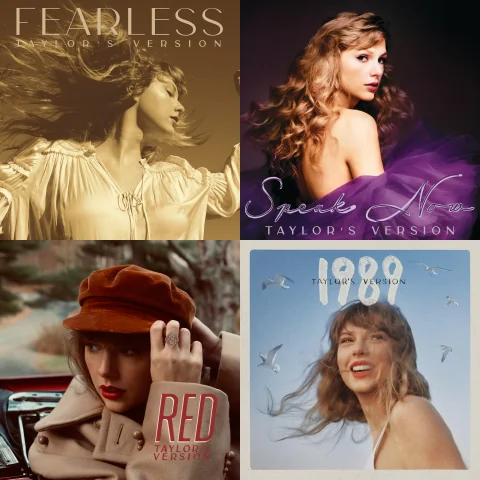

Taylor Swift es una icónica cantante, compositora y actriz estadounidense nacida el 13 de diciembre de 1989 en Reading, Pennsylvania. Desde una edad temprana, demostró un talento innato para la música y comenzó su carrera como cantante de música country a los 16 años. Con el lanzamiento de su álbum homónimo en 2006, Swift rápidamente se convirtió en una sensación en el mundo de la música country, gracias a su habilidad para contar historias a través de sus letras sinceras y emotivas. A lo largo de su carrera, ha evolucionado su estilo musical hacia el pop, ganando numerosos premios y batiendo récords en la industria musical. Su influencia trasciende la música, ya que es una defensora de los derechos de autor y ha utilizado su voz para abogar por cuestiones sociales y políticas. Taylor Swift es una de las artistas más influyentes y exitosas de su generación, con una base de seguidores leales en todo el mundo.
Visita su sitio oficial aquí !!!
The Eras Tour es un emocionante viaje a través del tiempo que celebra la música a lo largo de las décadas. Con actuaciones electrizantes, escenografía impresionante y una selección de canciones desde clásicos atemporales hasta éxitos recientes, es un espectáculo inolvidable. Cada acto representa una era musical, reviviendo la magia del pasado. Este tour une a personas de todas las edades en una experiencia única que rinde homenaje a la música atemporal.
Taylor Swift emprendió un ambicioso proceso de regrabación de sus álbumes anteriores, tras perder los derechos de sus grabaciones originales. Este proyecto, conocido como "Taylor's Version", busca recuperar su control creativo y financiero sobre su catálogo. Swift ha estado trabajando arduamente para capturar la esencia y autenticidad de sus primeros discos, regrabando canción por canción. Esta iniciativa es un ejemplo de su determinación en la industria musical y su deseo de preservar su legado artístico. Los fanáticos esperan ansiosos estas nuevas versiones, que ofrecen una perspectiva madura y reflexiva de sus icónicas composiciones.
